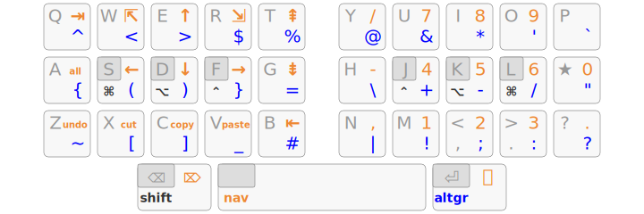

Une variante ergonomique de QWERTY pour les développeurs francophones et
les typographes exigeants.
Plus efficace qu’AZERTY pour le français : toutes les
lettres du français se font dans la zone alphabétique de 3×10 touches, via
une unique touche morte sur la home row qui
permet une typographie soignée : majuscules accentuées, lettres
entrelacées, guillemets et apostrophe typographiques…
Plus ergonomique que QWERTY pour coder : les symboles
de programmation sont disponibles à leur emplacement habituel en QWERTY,
mais ils sont également accessibles dans cette zone de 3×10 touches via
la couche AltGr.
Lafayette permet ainsi de se passer totalement des touches
excentrées. C’est un gain de confort immédiat sur un clavier
standard et cela permet l’utilisation des claviers (très) compacts, pour
rechercher la meilleure ergonomie possible.
Plutôt que d’avoir une touche morte par accent comme habituellement,
Lafayette dispose d’une seule touche morte pour tous les accents utilisés en
français :
Toutes les lettres utilisées en français peuvent ainsi être saisies dans
le pavé alpha de 3×10 touches — ce qu’aucune disposition standard ne permet
(AZERTY, QWERTZ suisse, QWERTY québécois, Bépo…).
Les ponctuations doubles ;:!? étant en Shift, il
est facile de les faire précéder d’une espace insécable : on maintient
Shift, on presse Espace puis la ponctuation, on
relâche Shift.
De nos jours, c’est de loin le plus gros gain ergonomique qu’on puisse
faire avec un clavier : n’utiliser aucune touche qui soit à plus
d’une touche d’écart de la position de repos.
Conformément à ce principe, la plupart des claviers ergonomiques modernes ne
disposent que de 6 colonnes de touches par main.
En n’utilisant que le pavé principal de 3×10 touches pour toutes les
lettres et tous les symboles de programmation, Lafayette permet de conserver
Shift, Tab, Enter, Backspace sur
les colonnes extérieures sans compromettre l’approche 1DFH.
Dvorak et Bépo sont optimisées, en disposant les touches
fréquentes au plus proche des positions de repos ; alors que Lafayette se
veut ergonomique, en supprimant toutes les extensions de doigt
susceptibles de causer des troubles musculo-squelettiques.
Cela peut sembler contre-intuitif mais une touche morte est une façon plus
saine d’accéder à un caractère spécial que AltGr : ça n’ajoute
aucune pression de touche et c’est beaucoup plus facile à synchroniser que
AltGr, notamment à vitesse élevée où l’on presse des touches
avant d’avoir relâché les touches précédentes.
Par exemple : si l’on suppose que AltGrW et
★W produisent toutes les deux É, alors
★WE fera toujours ée mais
AltGrWE risque de produire éè
(deux accents) à vitesse élevée.
AltGr permet d’accéder aux symboles de programmation en restant
dans une approche 1DFH, mais reste facultative.
Sur un clavier QWERTY il est naturel de saisir les symboles de programmation
là où ils sont imprimés, i.e. sur des positions excentrées. Mais au fur et à
mesure on peut prendre l’habitude de privilégier leurs alternatives en
AltGr, e.g.
{()} sur AltGrASDF,
et surtout profiter des enchaînements courants comme
-> sur AltGrKE,
=> sur AltGrGE,
('') sur AltGrSOOD,
etc.
À noter : AltGr est plus facile d’accès sur les ordinateurs
portables (barre d’espace en 5u) que sur les claviers bureautique externes
(barre d’espace en 6.25u voire 7u), sauf à s’équiper d’un modèle compact.
Sur macOS il est recommandé d’utiliser Karabiner pour inverser les touches⌘ Command
et ⌥ Option à droite.
Puisque toutes les lettres sont dans le pavé principal de 3×10 touches on
peut envisager d’utiliser Shift avec un pouce, pour un gain de
confort important ; et on peut même envisager de ne plus utiliser du tout de
colonnes extérieures, supprimant ainsi radicalement toutes les extensions
d’auriculaires.
Arsenik est un
exemple d’agencement de touches permettant aux utilisateurs avancés
d’utiliser 100 % de Lafayette sur uniquement 33 touches :

Shift passe sous le pouce gauche, et un appui bref donne un
Backspace ;
AltGr reste sous le pouce droit, et un appui bref donne un
Enter ;
un appui long sur la barre d’espace donne accès à la couche
« Navigation » : flèches / tabulations / raccourcis à gauche, pavé
numérique à droite ;
les modifieurs Ctrl, Alt, Super
sont associés à SDF et JKL comme home row mods.
D’autres agencements sont évidemment possibles. Miryoku est de loin le
plus connu mais il nécessite 6 touches de pouces, donc un clavier
ergonomique ; Arsenik, avec 3 touches de pouces, peut s’utiliser sur
n’importe quel clavier — y compris un clavier d’ordinateur portable.
Pour beaucoup d’utilisateurs, les principaux défauts d’AZERTY sont le
point et les chiffres en Shift, et l’impossibilité de saisir des
majuscules accentuées. Il existe des dispositions standard qui permettent de
taper en français sans ces inconvénients, notamment :
QWERTY
québécois – É en accès direct, ÈÙ en touches
excentrées, ÀÇ en touches très excentrées ;
QWERTZ suisse
– É en accès direct, ÀÈÇ en touches excentrées,
seul Ù requiert une touche morte très excentrée.
Particularité : CapsLock est requis pour les majuscules accentuées.
Bépo est une optimisation de type Dvorak
pour le français avec :
le point en direct, les chiffres en Shift, les majuscules
accentuées en Shift ;
des lettres excentrées (MZ), voire très excentrées (WÇ), voire en
AltGr (Ù et les trémas) ;
aucun raccourci clavier classique (CtrlZXCV) en
main gauche.
Ces dispositions peuvent s’avérer meilleures qu’AZERTY mais ne permettent
pas une approche 1DFH. À ce titre l’intérêt ergonomique
de Bépo est très discutable, d’autant que l’optimisation est faite au
détriment de l’anglais et des raccourcis clavier.
Le projet Ergo‑L, pour « ERGOnomic
Lafayette », reprend les principes de Lafayette tout en appliquant une
optimisation moderne de type Colemak / Workman pour un compromis français /
anglais.
Grâce à cette approche, Ergo‑L est à la fois meilleur que Bépo pour le
français et meilleur que
Dvorak pour l’anglais — le tout, en conservant les raccourcis claviers
usuels du QWERTY, les chiffres en direct, et l’approche 1DFH
de Lafayette qui assure la compatibilité avec les claviers compacts.
Les projets Ergo‑L et Lafayette sont développés en collaboration — la
couche AltGr, notamment, est commune aux deux projets. Passer de Lafayette à
Ergo‑L est relativement simple.
Exécuter l’installeur et redémarrer Windows, même si
le système ne le demande pas. La disposition de clavier apparaît dans la
barre de langues (indicateur de la barre des tâches).
Pour les utilisateurs sans droits d’administration, un pilote portable
est disponible dans l’archive nomade ci-après.
Enregistrer dans ~/Library/Keyboard Layouts (pour le seul
utilisateur courant) ou /Library/Keyboard Layouts (pour tous
les utilisateurs), et relancer la session.
La disposition de clavier est disponible dans vos préférences « Langue et
Texte », onglet « Méthodes de saisie ». Il est possible d’utiliser Karabiner pour inverser les touches⌘ Command et ⌥ Option à droite, afin d’accéder plus
facilement à la couche de symboles.
La disposition de clavier est disponible dans le gestionnaire de
préférences du bureau sous un nom générique (« custom layout »,
« disposition personnalisée », etc.).
Sous XOrg on peut aussi l’activer directement en ligne de commande :
La disposition de clavier est disponible dans le gestionnaire de
préférences du bureau sous le nom « Lafayette ».
Sous XOrg on peut aussi l’activer directement en ligne de commande :
setxkbmap fr -variant lafayette
Remarque : avec certains bureaux (Gnome notamment), la
touche morte ★ ne fonctionne que si Lafayette est définie comme
disposition de par défaut, i.e. en haut de la liste dans les préférences
clavier.
L’installeur contient les deux variantes, Lafayette et Lafayette101. Ces
dispositions sont activables par le gestionnaire de préférences de votre
bureau ou directement en ligne de commande (sous Xorg) :
Lafayette42 devient la version officielle, et la version
historique est archivée sous le nom Lafayette101.
Les tirets court, bas, cadratin et demi-cadratin sont désormais
faisables avec la touche morte ★ et
FVBG respectivement.
Le tréma mort passe en double touche morte :
★★i donne « ï ».
La couche AltGr est révisée, en collaboration avec le projet
Ergo‑L.
Windows : pilote portable AutoHotKey.
v0.8 (2023-01-22)
ShiftEspace produit désormais une insécable fine.
AltGrEspace produit désormais une espace normale.
Les accolades, crochets et chevrons {}[]<> ne
peuvent plus se faire avec la touche morte ★, et nécessitent
désormais AltGr.
La couche AltGr de la variante Lafayette42 est complètement
revue pour la compatibilité avec les claviers 3×6 et 3×5.
v0.6 (2018-04-02)
La couche AltGr est modifiée pour faciliter certains enchaînements :
+=, -=, =>, (''),
~/, etc.
AltGrEspace ne produit plus Escape
(impossible à implémenter sous Windows).
Nouvelle variante Lafayette42 où tous les caractères accentués
et symboles de ponctuation sont faits avec la seule touche morte ★,
afin de s’adapter aux claviers compacts (4×6).
v0.5 (2015-12-10)
Le tréma mort (¨) passe sur la touche ],
pour éviter les touches mortes en majuscule (source de confusion).
Le symbole Euro (€) passe sur la touche 5
pour mieux coller aux claviers QWERTY récents.
Les flèches ←↓↑→ passent des touches
IJKL aux touches
HJKL — Vim powwa!
macOS : meilleur fonctionnement des touches mortes en CapsLock.
Linux : meilleur fonctionnement de la touche AltGr sous Chromium.
v0.2.1 (2013-03-05)
Linux : correction du pilote XKB.
v0.2 (2010-11-16)
Windows : première version publique.
macOS : correction du pilote keylayout.
Linux : correction du pilote XKB
(guillemets typographiques « »).


{kind=link}
{kind=link}
{kind=link}
{kind=link}